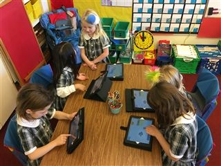

Coding
In Middle School, students continue learning with block-based programming environments as they create more complicated projects in Scratch.
Through the use of these apps, students learn the basics of coding including sequencing, conditional statements, Booleans, and loops.
